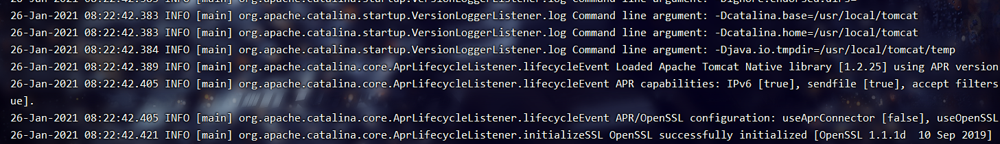
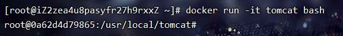
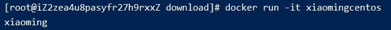
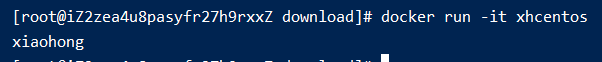

104-dockerFile的CMD
1、CMD的语法
CMD ["executable","param1","param2"] (exec form, this is the preferred form): 运行一个可执行的文件并提供参数。CMD ["param1","param2"]: 为ENTRYPOINT指定参数CMD command param1 param2 (shell form): 执行某条shell命令，是以/bin/sh -c的方法执行的命令
2、ENTRYPOINT的语法
ENTRYPOINT ["executable","param1","param2"](exec格式推荐):ENTRYPOINT command param1 param2:
2、CMD和ENTRYPOINT的区别
相同点: CMD和ENTRYPOINT都是容器启动的时候，执行的命令；都支持exec和shell方式；
一般用法: 单独一个CMD或者先ENTRYPOINT后CMD结合使用
假如有多个CMD，启动的时候带参数，会覆盖前面的CMD命令，最后一个命令生效。所以我们平时用CMD的时候，有一种情况的就是单独用一个CMD命令即可，启动命令不带参数
比如tomcat
tomcat在最后就是CMD ["catalina.sh", "run"]就是CMD的一种用法
我们在启动的时候执行docker run -it tomcat会自动启动tomcat就是因为这句CMD

假如我们启动命令这么写 docker run -it tomcat /bin/bash那么就会用bash替代CMD命令，因为CMD是只执行最后一个的。就会发现tomcat不会自动启动了

多个CMD的例子
有下面的dockerFile文件，
FROM centos
CMD echo "xiaoming"
执行构建并且启动镜像
docker build -f ./dockerFile -t xmcentos .
docker run -it xmcentos
可以看到控制台输出了xiaoming

当我们写多条CMD的时候
FROM centos
CMD echo "xiaoming"
CMD echo "xiaohong"
执行构建并且启动镜像
docker build -f ./dockerFile -t xhcentos .
docker run -it xhcentos
可以看到控制台只输出了xiaohong，并没有输出xiaoming

CMD为ENTRYPOINT指定参数的例子
FROM centos
ENTRYPOINT ["ls"]
CMD ["-l"]
CMD给ENTRYPOINT提供参数，真正执行的是ls -l